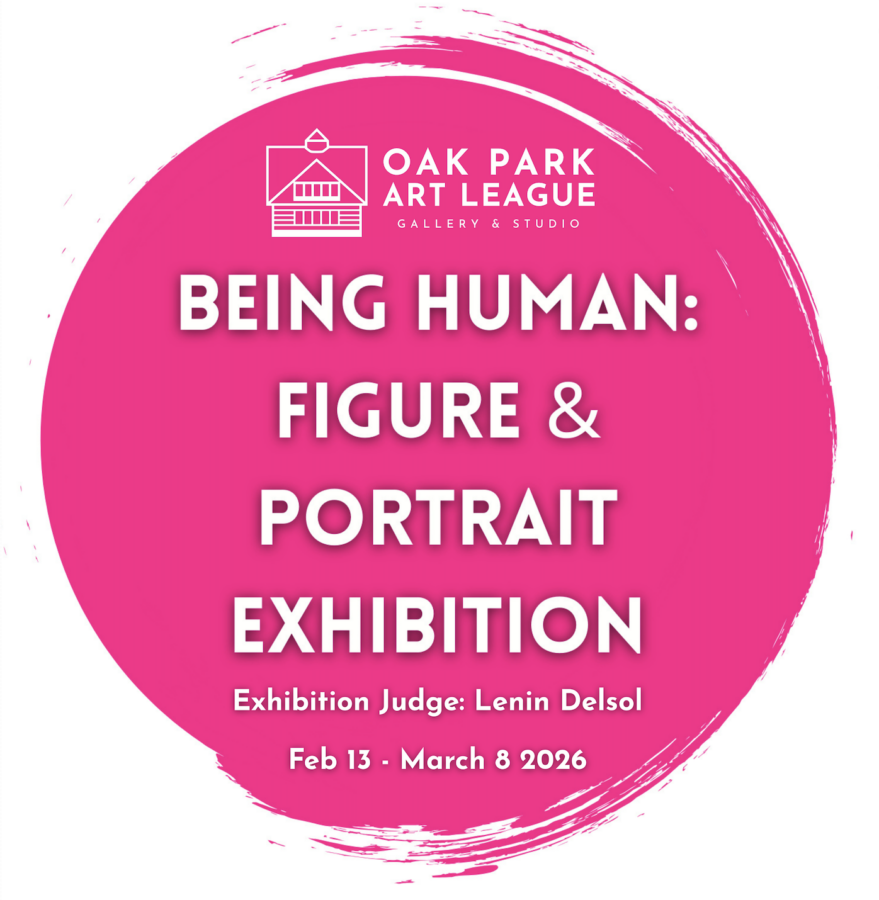

BEING HUMAN
Join us for the opening reception for our annual Figure & Portrait Show. Exhibition Judge Lenin DelSol will announce selections.
In an age of digital connection and physical distance, how do we capture and portray what makes us most human? What does it mean to be human in this moment and how can art portray this? Through figure and portrait, artists have long explored the complexity of human experience—our vulnerabilities, connections, contradictions, and resilience.
The public is invited to the ARTIST RECEPTION – Saturday, February 14, 2026, 1-3pm to see the show, meet the artists and hear awards announced by exhibit judge Lenin Delsol. It is free to visit the gallery and see the show during gallery hours,
Thursday – Friday 1-5pm, Saturday 10am-4pm, Sunday 1-4pm
EXHIBITING ARTISTS
Michelle Major, Marion Sirefman, Logan Mulholland, Bumpy Wilson, John Kirkpatrick, Jen McNulty, Salvador Campos, Allison Carol Schmocker, Sandra Ferguson, Dave Ottens, Alex Spragens, Gayle Ronan, Lisa Calvert, David Morris, Anne Nacht Morgan, Jon Schmidt, Barbara Moline, Jim Sweitzer, David Gulyas, Sandy Bury, Grigor Eftimov, Bryan Gammage, Susan Becker, Peter Bialecki, Lynne Huntley, Deborah Paige Jackson, Abel Beruman, Connor Warriner, Chelsea Leamy, Charles Simone, Glenn Zarosk, Marzena Bukowska, Peggy Dee, Mike Dillon, Chris Heron, Susy Chan, Anthony Lentini, George T. Chakos, Barbara McClure, Caroline McIlroy